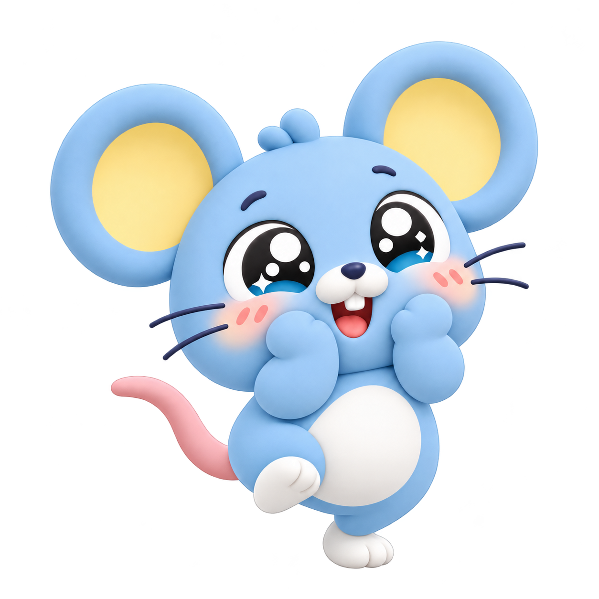

직지의 시작, 흥덕사지
직지가 인쇄된 흥덕사지에서 금속활자 제작에 필요한 밀랍을 찾아봐요.
직지의 역사와 제작 과정은 어린이에게 어렵고 생소할 수 있습니다. 긴 설명보다 시각 콘텐츠와 직접 참여하는 체험으로 문화유산에 대한 접근성을 높이고자 했습니다.
찍쥐와 짹째는 사라진 금속활자 한 조각을 찾아 흥덕사에서 직지의 완성까지 함께 떠납니다. 호기심 많은 찍쥐가 단서를 찾고, 짹째가 역사와 제작 과정을 알려주며 어린이들을 이야기 속 탐험으로 이끕니다.
호기심을 가지고 질문하는 친구
짹째와 활자 탑을 가지고 놀다 금속활자 한 조각을 잃어버립니다. 궁금한 것을 묻고 직접 단서를 찾으며 이야기의 문을 엽니다.
짹째 만나보기 ↗
이야기를 설명하고 안내하는 친구
찍쥐와 함께 사라진 활자를 찾아가는 까치입니다. 직지의 역사와 금속활자 제작 과정을 설명하고 어린이의 탐색을 안내합니다.
AR 체험 살펴보기 ↗
찍쥐와 짹째를 따라가 체험 여정을 알아봐요!
찍쥐와 짹째의 이야기를 만나고, AR 체험으로 흥덕사지와 금속활자의 제작 과정, 직지의 가치를 알아봐요.
체험을 마친 뒤에는 특별한 선물을 받고, 포토존에서 추억까지 남겨보세요!
3D 모델을 불러오는 중입니다.
스크롤하며 학습 단계를 살펴보세요 ↓01 / 05
직지 제작에 쓰인 밀랍의 시작점인 벌집 구조를 살펴봅니다.
벌집에서 얻은 밀랍이 활자 모양으로 이어지는 과정을 알아봅니다.
가지 모양으로 연결된 활자 주조 구조를 관찰합니다.
완성된 낱개 금속활자의 형태와 쓰임을 살펴봅니다.
금속활자로 인쇄된 직지의 책 형태를 만나며 제작 여정을 마무리합니다.
어려운 한자의 형태를 한글의 조형성과 결합하여,직지의 전통적 가치를 친근하고 현대적인 로고로 재해석했습니다.
유산을 이해하는 일에서, 브랜드의 경험을 설계하는 일까지.
직지의 역사와 기존 콘텐츠 조사
브랜드 콘셉트 및 방향 설정
로고, 타이포그래피, 컬러 시스템 개발
찍쥐와 짹째 캐릭터 디자인
인쇄물, 디지털, 영상 콘텐츠 제작
전시 및 인터랙티브 경험 구현
직지의 가치를 오늘의 시선으로 다시 읽고, 새로운 디자인 언어로 이어가는 브랜드 리뉴얼 프로젝트입니다. 체험 서비스 자체보다 브랜드의 정체성과 이야기를 소개합니다.
문화유산을 친근하게 만나는 계기를 만들기 위해서입니다. 찍쥐와 짹째가 사라진 활자를 찾아가는 여정을 통해 발견과 연결의 이야기를 전합니다.
브랜드 아이덴티티, 캐릭터, 그래픽, 편집, 디지털 콘텐츠, 전시 디자인의 여섯 영역을 확장 방향으로 소개합니다. 현재 이미지는 임시 자료이며, 실제 결과물과 영상은 추후 교체해 공개할 예정입니다.
전통의 가치를 지키면서 오늘의 사람들이 쉽고 즐겁게 만나는 것입니다. 기록유산을 과거의 정보에 머무르게 하지 않고 새로운 이야기와 경험으로 이어가고자 합니다.
스크롤을 내리며 종이 리플렛을 펼쳐 보세요.